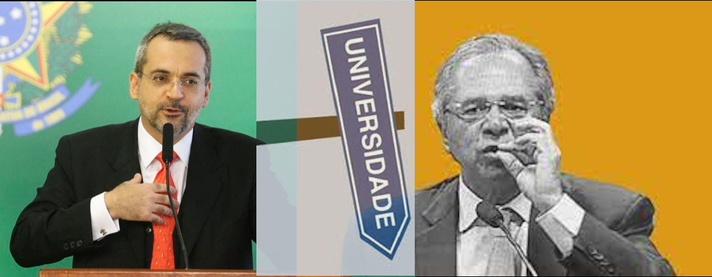

Universidades e Produção de Conhecimento.
Reforma Educacional e a Nação em Risco.

A reforma educacional proposta pelo governo atinge o Ensino Médio e coloca o futuro do país em risco. Esta proposta simplista demonstra uma profunda ignorância ou talvez,ojeriza ao pensamento às humanidades, às artes e à ciência. A medida afirma que o que importa para a formação de um cidadão, é falar e escrever em português e inglês e fazer contas. Este simplismo, mostra com clareza a concepção de cidadão deste governo. |
Future-se e a destruição da Universidade. 
Lançamento do programa Future-se é saudado no Editorial da Folha de São Paulo como o principal ato da gestão Weintraub. Defendendo a privatização da Universidade a Folha se une o ataque liberal a Universidade Pública. Ao mesmo tempo o grupo de investimento em Educação Superior AFFYA, da família Guedes, é lançada na bolsa NASDAq angariando milhões de dólares . Este lançamento mostra que o projeto de Weintraub é na verdade um plano de negócios. |
|
O ataque a Universidade e Petrobrás visam atingir dois dois pilares da estrutura de produção de conhecimento científico e tecnológico do pais. Estes ataques podem levar o país a perder sua soberania condenando o país a uma subserviência total e a ter uma economia completamente dependente. |
Guedes e Weintraub ferem de morte a Universidade .

O primeiro passo para a destruição das Instituições de Ensino e Pesquisa no País foi dado pela PEC do orçamento e o discurso ilusório de que cortar gastos públicos é fazer cortes gerais em todas as direções. Em nome da austeridade fiscal impôs-se que orçamento de todas as instituições seriam congelados. Quando impôs-se que não haveria novos contratos, que os aposentados não seriam repostos vaticinaram a extinção da produção de conhecimento no país.
|
Implosão da Estrutura de Produção de Conhecimento no País 
As medidas contra CAPES e CNPq tem o potencial de implodir a Estrutura de Produção de Conhecimento no país. Os cortes na CAPES podem impossibilitar a formação de novos pesquisadores, e com eles inviabilizar várias das pesquisas em andamento no país. A Capes tem um papel central na formação de pesquisadores e o CNPq uma papel crucial no fomento às pesquisas. O negacionismo do governo junto com o discurso liberal radical de Guedes na prática vai se concretizando pela destruição das Instituições de Estado e de toda a Estrutura de produção do conhecimento no país. A quem servem estes senhores? |
Marco Legal da Ciência e Tecnologia.
O novo Marco Legal de Ciência e Tecnologia apesar de apregoar uma maior aproximação entre Universidade e empresas favorece as consultorias muito mais do que o desenvolvimento de ciência e tecnologia. A aproximação produtiva entre Universidades e Indústria só ocorrerá quando indústrias mantiverem em seus quadros Departamentos de desenvolvimento com um corpo qualificado de pesquisadores. |